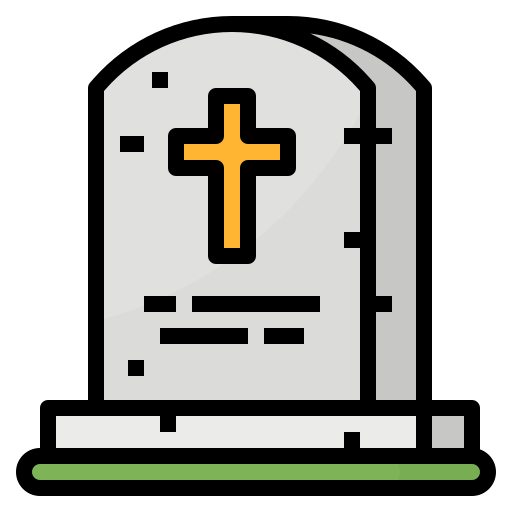

SOBRE


14 de março de 2018
Stephen William Hawking foi um físico teórico, cosmólogo e autor britânico, reconhecido internacionalmente por sua contribuição à ciência, sendo um dos mais renomados cientistas do século. Doutor em cosmologia, foi professor lucasiano emérito na Universidade de Cambridge, um posto que foi ocupado por Isaac Newton, Paul Dirac e Charles Babbage. Foi, pouco antes de falecer, diretor de pesquisa do Departamento de Matemática Aplicada e Física Teórica (DAMTP) e fundador do Centro de Cosmologia Teórica (CTC) da Universidade de Cambridge.
Biografia
Stephen Hawking nasceu exatamente no aniversário de 300 anos da morte de Galileu. Seus pais eram Frank Hawking, um biólogo pesquisador que trabalhava como parasitólogo no Instituto Nacional de Pesquisa Médica de Londres, e Isabel Hawking. Teve duas irmãs mais novas, Philippa e Mary, e um irmão adotivo, Edward. Hawking sempre foi interessado por ciência. Em sua infância, quando ainda morava em St Albans, estudou na St Albans High School for Girls (garotos de até 10 anos eram educados em escolas para garotas) entre 1950 e 1953.
Entrou, em 1959, na University College, Oxford, onde pretendia estudar matemática, conflitando com seu pai, que gostaria que Stephen estudasse medicina. Como não pôde, por não estar disponível em tal universidade, optou então por física, formando-se três anos depois (1962). Seus principais interesses eram termodinâmica, relatividade e mecânica quântica. Obteve o doutorado na Trinity Hall em Cambridge em 1966, de onde era um membro honorário. Depois de obter doutorado, passou a ser pesquisador e, mais tarde, professor no Gonville and Caius College. Depois de abandonar o Instituto de Astronomia em 1973, Stephen entrou para o Departamento de Matemática Aplicada e Física Teórica tendo, entre 1979 e 2009, ano em que atingiu a idade limite para o cargo, ocupado o posto de professor lucasiano de Matemática, cátedra que fora de Newton, tendo sido professor lucasiano emérito da Universidade de Cambridge.
Casou pela primeira vez em julho de 1965 com Jane Hawking de quem teve 3 filhos. No Natal de 1989, anunciou à família que iria viver com uma das suas enfermeiras, separando-se em 1991. Casou depois com sua enfermeira Elaine Mason em 16 de setembro de 1995, da qual se divorciou em 2006.
Hawking era portador de esclerose lateral amiotrófica (ELA), uma doença neurodegenerativa que paralisa progressivamente os músculos do corpo, mas que mais frequentemente não afeta as funções cognitivas. A ELA ainda não possui cura. A doença foi detectada quando tinha 21 anos. Em 1985 Hawking teve que submeter-se a uma traqueostomia após ter contraído pneumonia visitando o CERN na Suíça e, desde então, utilizava um sintetizador de voz para se comunicar. Gradualmente, foi perdendo o movimento dos braços e pernas, assim como do resto da musculatura voluntária, incluindo a força para manter a cabeça erguida, de modo que sua mobilidade era praticamente nula. Em 2005 Hawking usava os músculos da bochecha para controlar o sintetizador, e em 2009 já não podia mais controlar a cadeira de rodas elétrica. Desde então outros grupos de cientistas estudaram formas de evitar que Hawking sofresse de síndrome do encarceramento, cogitando traduzir os pensamentos ou expressões de Hawking em fala. A versão mais recente, desenvolvida pela Intel e cedida a Hawking em 2013, rastreava o movimento dos olhos do cientista para gerar palavras, embora o cientista tenha afirmado em seu site oficial que preferia usar o "cheek tracking" (rastreamento da bochecha) para utilizar a interface ACAT (Sistema desenvolvido pela Intel).
No entanto, embora eles funcionem bem para outras pessoas, eu ainda acho que o interruptor na minha bochecha é mais fácil e menos cansativo de usar.
Em 9 de janeiro de 1986, foi nomeado pelo papa João Paulo II membro da Pontifícia Academia das Ciências.
Em 2015, em Londres, Drake, Martin Rees e o empresário russo Yuri Milner, juntamente com Stephen Hawking, anunciaram suas intenções de fornecer US$ 100 milhões em financiamento ao longo da próxima década para os melhores pesquisadores do SETI, através do projeto Breakthrough Listen, que permitiria que novos levantamentos de dados rádio-ópticos pudessem ocorrer usando os mais avançados telescópios. Em dezembro de 2017, Hawking processou o governo britânico por querer privatizar o Serviço Nacional de Saúde.
Stephen Hawking morreu na sua casa em Cambridge em 14 de março de 2018, aos 76 anos, devido a complicações da sua doença degenerativa.
Premiações
- 1975 — Medalha Eddington
- 1976 — Medalha Hughes
- 1979 — Medalha Albert Einstein
- 1982 — Ordem do Império Britânico (Comandante)
- 1985 — Medalha de Ouro da Royal Astronomical Society
- 1986 — Membro da Pontifícia Academia das Ciências
- 1988 — Prêmio em Física da Fundação Wolf
- 1989 — Prêmio "Príncipe das Astúrias" da Concórdia (contribuição à paz, entendimento, etc.)
- 1989 — Título de "Companheiro de Honra", da Rainha Elizabeth II
- 1999 — Prêmio "Julius Edgar Lilienfeld" da Sociedade Americana de Física
- 2003 — Prêmio "Michelson Morley" da Case Western Reserve University
- 2006 — Medalha Copley da Royal Society
- 2009 — Medalha Presidencial da Liberdade
- 2013 — Fundamental Physics Prize
- 2016 — Professor Honorário do Instituto de Astrofísica das Canárias